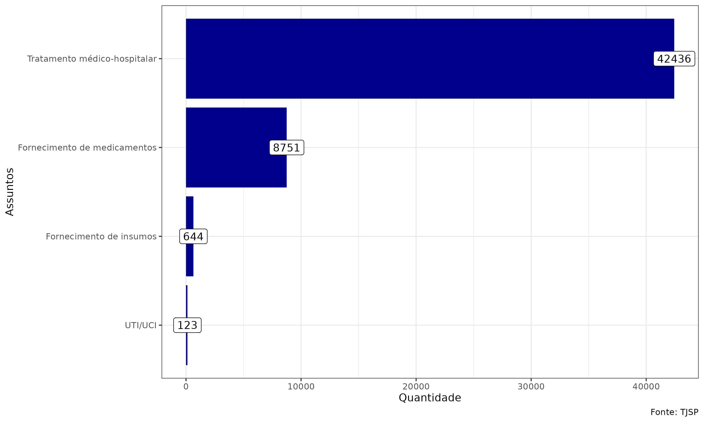
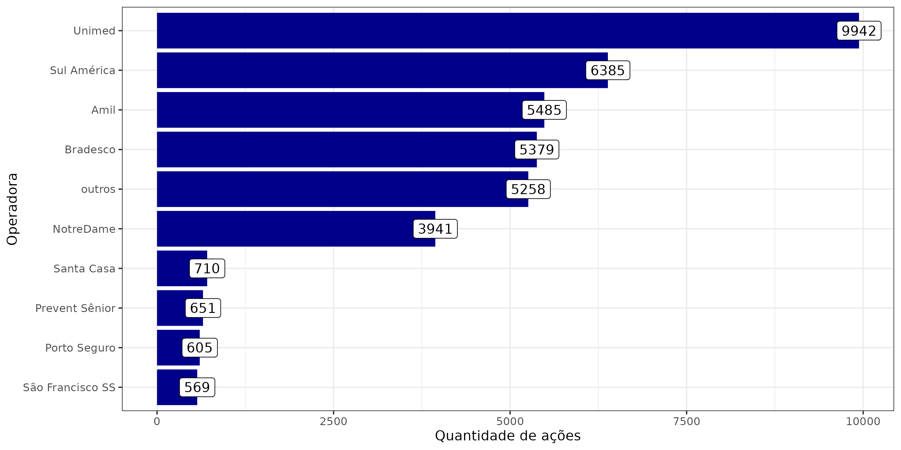
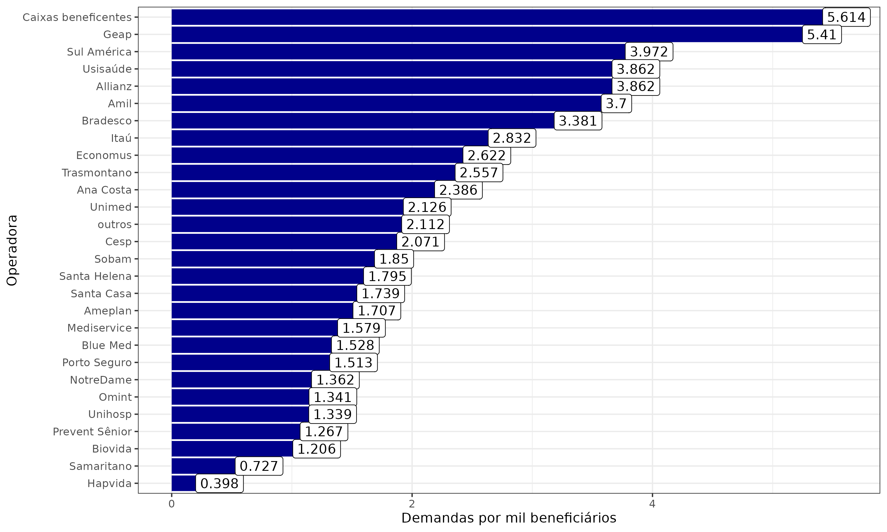
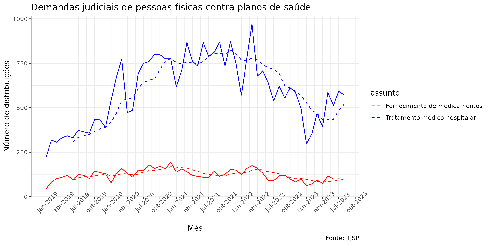
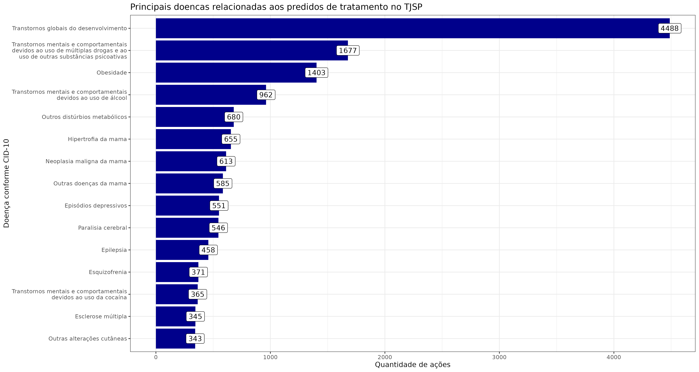
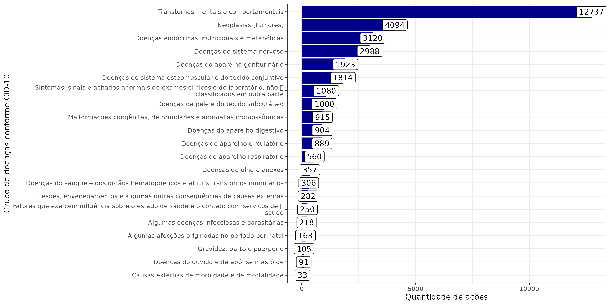

4 Resultados
4.1 Principais assuntos
O Gráfico 4.1 abaixo mostra os quantitativos dos principais assuntos.

As ações, Gráfico 4.1, envolvendo tratamento médico-hospitalar aparecem em muito maior quantidade do que o fornecimento de medicamentos. De um total de 51.954 ações, 42.436 (81,67%) são pedidos de tratamento e 8.751 (16,84%) são pedidos para fornecimento de medicamentos.
4.2 Polo passivo
O Gráfico 4.2 abaixo mostra as principais operadoras presentes no polo passivo. Houve junção de alguns nomes. Por exemplo, todas as unimeds foram classicadas como “Unimed”. O mesmo ocorreu com o Bradesco, Itaú e outras. Por vezes, houve variações nos nomes. O número do CNPJ também foi utilizado para unificar as categorias. As operadoras com menos de 65 ações contra elas foram mantidas na categoria outros. Havia um número grande de operadoras com o número de ações judiciais entre 50 e 65 e sua inclusão inviabilizaria a visualização apropriada.

4.2.1 Principais operadoras de saúde acionadas no TJSP
A Tabela 4.1 e o Gráfico 4.3, que elenca as operadoras de saúde por quantidade de demandas em números absolutos, deve ser analisada com cautela. A quantidade de demandas está associada à quantidade de beneficiários, de forma que operadoras de grande porte aparecerão nas primeiras posições independentemente da qualidade do serviço prestado. Por tal razão, não surpreende a constatação de que Unimed, Sulamerica, Amil e Bradesco ocupem as quatro primeiras posições. Daí a necessidade de se ponderar a quantidade de demandas pela quantidade de beneficiários, realizando o cálculo de uma taxa de demandas por mil beneficiários.
Polo passivo | Quantidade |
|---|---|
Unimed | 9.942 |
Sul América | 6.385 |
Amil | 5.485 |
Bradesco | 5.379 |
outros | 5.258 |
NotreDame | 3.941 |
Santa Casa | 710 |
Prevent Sênior | 651 |
Porto Seguro | 605 |
São Francisco SS | 569 |
São Cristóvão | 434 |
Cassi | 379 |
Santa Helena | 365 |
Qualicorp | 342 |
Iamspe | 325 |
Itaú | 314 |
Hapvida | 267 |
Trasmontano | 263 |
Caixas beneficentes | 255 |
Cesp | 234 |
Ana Costa | 215 |
Sobam | 198 |
Mediservice | 175 |
Sompo | 170 |
Cruz Azul | 166 |
Blue Med | 151 |
UNIÃO FEDERAL - PRU | 148 |
Ameplan | 135 |
Beneficência portuguesa | 124 |
Postal Saúde | 102 |
Geap | 95 |
São Lucas | 95 |
Samaritano | 93 |
Green Line | 92 |
Omint | 90 |
Hb Saúde | 85 |
Allianz | 84 |
Biovida | 80 |
Unihosp | 78 |
QSaúde | 71 |
Medical Health | 70 |
Usisaúde | 69 |
Economus | 67 |
4.2.2 Demandas por beneficiários - tabela
Operadora | Demandas | Beneficiarios | Demandas por mil beneficiários | Percentual demandas | Percentual beneficiários |
|---|---|---|---|---|---|
Caixas beneficentes | 255 | 45.422 | 5,614 | 0.6% | 0.2% |
Geap | 95 | 17.559 | 5,410 | 0.2% | 0.1% |
Sul América | 6.385 | 1.607.447 | 3,972 | 15.4% | 8.8% |
Allianz | 84 | 21.752 | 3,862 | 0.2% | 0.1% |
Usisaúde | 69 | 17.866 | 3,862 | 0.2% | 0.1% |
Amil | 5.485 | 1.482.387 | 3,700 | 13.2% | 8.1% |
Bradesco | 5.379 | 1.590.920 | 3,381 | 12.9% | 8.7% |
Itaú | 314 | 110.889 | 2,832 | 0.8% | 0.6% |
Economus | 67 | 25.550 | 2,622 | 0.2% | 0.1% |
Trasmontano | 263 | 102.847 | 2,557 | 0.6% | 0.6% |
Ana Costa | 215 | 90.115 | 2,386 | 0.5% | 0.5% |
Unimed | 9.942 | 4.675.988 | 2,126 | 23.9% | 25.7% |
outros | 5.258 | 2.489.802 | 2,112 | 12.6% | 13.7% |
Cesp | 234 | 112.963 | 2,071 | 0.6% | 0.6% |
Sobam | 198 | 107.046 | 1,850 | 0.5% | 0.6% |
Santa Helena | 365 | 203.388 | 1,795 | 0.9% | 1.1% |
Santa Casa | 710 | 408.378 | 1,739 | 1.7% | 2.2% |
Ameplan | 135 | 79.083 | 1,707 | 0.3% | 0.4% |
Mediservice | 175 | 110.847 | 1,579 | 0.4% | 0.6% |
Blue Med | 151 | 98.837 | 1,528 | 0.4% | 0.5% |
Porto Seguro | 605 | 399.875 | 1,513 | 1.5% | 2.2% |
NotreDame | 3.941 | 2.894.137 | 1,362 | 9.5% | 15.9% |
Omint | 90 | 67.108 | 1,341 | 0.2% | 0.4% |
Unihosp | 78 | 58.271 | 1,339 | 0.2% | 0.3% |
Prevent Sênior | 651 | 514.005 | 1,267 | 1.6% | 2.8% |
Biovida | 80 | 66.362 | 1,206 | 0.2% | 0.4% |
Samaritano | 93 | 127.870 | 0,727 | 0.2% | 0.7% |
Hapvida | 267 | 671.475 | 0,398 | 0.6% | 3.7% |
4.2.3 Demandas por beneficiários - gráfico

A Tabela 4.2 e o Gráfico 4.3 apresentam a taxa de demandas por beneficiários. Diversas operadoras que se encontravam nas primeiras posições na contagem em números absolutos desceram para níveis inferiores, uma vez que o divisor maior contribui para uma taxa menor. Ao mesmo tempo, novas operadoras surgem na liderança quando observada a quantidade de demandas, ponderada pelo número de vidas seguradas.
As Caixas Beneficentes aparecem em primeiro lugar com 5,614 demandas por 10 mil beneficiários, e a Geap aparece em segundo lugar, com 5,410. As três operadoras seguintes são Sulamerica, com 3,972, Bradesco, com 3,381, Allianz e Unisaude, com 3,862, e Amil, com 3,70.
Um grupo grande com operadoras intermediárias aparecem com taxas entre uma e três demandas por 10 mil beneficiários. E, por fim, um seleto grupo de duas operadoras aparece com menos de uma demanda por 10 mil beneficiários: Samaritano, com 0,727 e Hapvida, com a taxa mais baixa de 0,398.
4.3 Evolução das demandas no tempo
O sistema de saúde sofreu entre 2019 e 2023 sucessivas intervenções de diversas naturezas, todas com potencial de elevado impacto nos litígios. Essa sucessão de intervenções em um período tão curto confunde causas e, por conseguinte, dificulta inferências sobre as possíveis causas das variações observadas na quantidade de casos no período analisado. Por essa razão, restringimos nossos comentários a aspectos meramente descritivos, preferindo aguardar onteanscurso de mais tempo para realizar novas análises.
Os três eventos de interesse com potencial impacto sobre a quantidade de demandas são o julgamento de dois recursos especiais do STJ sobre a taxatividade do rol da ANS, a resolução normativa n. 539/2022 da ANS e o início da vigência da lei federal n. 14.454. Ao declarar a taxatividade do rol da ANS, o julgamento do STJ restringiu o acesso a tratamentos e atua como uma potencial causa de redução no volume de ações.
A resolução normativa da ANS incluiu no rol tratamentos de distúrbios relacionados a autismo, sendo uma potencial causa de redução no volume de demandas, ao sinalizar de forma clara para as operadoras sua responsabilidade portais tratamentos. E a vigência da lei federal n. 14.454 é uma potencial causa de aumento no volume de ações ao declarar o rol da ANS como exemplificativo.
O Gráfico 4.4 abaixo mostra a evolução da quantidade de demandas no tempo, separando os pedidos de tratamento dos pedidos de fornecimento de medicamentos.

O sistema de saúde sofreu entre 2019 e 2023 sucessivas intervenções de diversas naturezas, todas com potencial de elevado impacto nos litígios. A primeira intervenção foi de natureza sanitária, a pandemia. A segunda intervenção foi de natureza judiciária, a decisão do STJ. A terceira intervenção foi de natureza legislativa, a promulgação da lei XXX.
Essa sucessão de intervenções em um período tão curto dificulta inferências sobre as possíveis causas nas variações drásticas observadas na quantidade de casos no período analisado. Por essa razão, restringiremos nossos comentários a aspectos meramente descritivos no momento, a fim de aguardar pelo menos até o final de 2023 para realizar novas análises.
A maior variação na quantidade de ações é observada nos casos envolvendo tratamentos. A quantidade de pedidos relacionados a medicamentos apresenta maior estabilidade. Isso se deve a [….].
As ações relacionadas a pedidos de medicamento são inferiores em relação aos de tratamento e oscilam em torno de 125 por mês. Em janeiro de 2019 houve 44 pedidos. Essa quantidade aumenta até atingir o ápice de 194 pedidos em dezembro de 2020. Ao longo de 2022 parece ocorrer uma queda, chegando a 89 em dezembro daquele ano. Já em 2023 as quantidades voltam a subir chegando a 117 em maio.
A quantidade de ações relacionadas a pedidos de medicamento são inferiores em relação aos de tratamento e oscilam em torno de 125 por mês. Em janeiro de 2019 houve 44 ações de acesso a medicamento. Essa quantidade aumenta até atingir o ápice de 194 pedidos em dezembro de 2020. Ao longo de 2022, parece ocorrer uma queda, chegando a 89 em dezembro daquele ano. Já em 2023 as quantidades voltam a subir chegando a 117 em maio.
As ações relacionadas a pedidos de tratamento apresentam um comportamento distinto. Em janeiro de 2019 foram XXX ações. Esse número aumenta até chegar a 867 em março de 2021. A quantidade mais elevado foi de 971 ações distribuídas em fevereiro de 2022, seguida de uma queda até 298 em janeiro de 2023, quando a quantidade volta a crescer até 585 em maio de 2023.
A relação de causalidade entre normas e precedentes, de um lado, e variações na quantidade de ações, de outro, não é determinística e adora comportamentos não usuais. Por exemplo, com a notícia do início do julgamento pelo STJ, os potenciais autores de medidas judiciais, receosos de uma restrição aos seus direitos, podem ter suspendido a propositura de ações para aguardar a decisão. Por essa razão, a queda no volume de ações poderia em tese ser observada antes mesmo da proclamação do resultado do julgamento.
O início da pandemia em março de 2020 parece estar associado a um aumento, seguido de uma estabilização na quantidade de ações. Essa estabilidade se rompe em março de 2022, quando a quantidade de ações começa a cair. A queda pode estar associada à antecipação de julgamento pela taxatividade do rol da ANS pelo STJ, o que desincentiva a propositura de ações fora do rol, mas pode também decorrer dessa suspensão antecipada na distribuição de ações por conta da expectativa de um julgamento pelo STJ.
Por outro lado, tanto a quantidade de ações envolvendo pedidos de tratamento como as de medicamentos aumentam a partir de janeiro de 2023. Tal aumento pode em tese ser explicado pela lei federal n. 14.454, que torna o rol exemplificativo e incentiva a propositura de ações, promulgada em setembro de 2021. O intervalo de 90 dias entre o início da vigência da e o aumento na quantidade de ações seria o tempo necessário para que os pacientes procurem seus advogados e estes consigam organizar os documentos e preparar a ação para distribuição.
Existe a possibilidade de o aumento na quantidade de ações observado no início de 2023 estar associado à nova lei, em especial porque janeiro é um mês de recesso no qual, normalmente, observamos uma queda sazonal na quantidade de distribuições. No entanto, por conta do curto período de tempo transcorrido até agora é recomendável cautela em qualquer conclusão, com a realização de futuras novas análises.
4.4 Pedidos de tratamento conforme a doença
Uma das formas de identificação das causas em uma variação na quantidade de ações é a verificação das doenças que estão sendo discutidas. Por exemplo, se é verificado que a queda está relacionada a tratamento de autismo apenas, as suas causas devem ser restritas a esse tipo de doença. A análise de evolução no tempo será focada apenas nas ações envolvendo tratamento, que apresentam maior variabilidade.
Para identificar as doenças objeto dos pedidos de tratamento, foi necessário baixar as petições iniciais nos procedimentos comuns ordinários, bem como os ajuizamentos nos procedimentos dos juizados especiais cíveis. Para identificar as doenças objetos dos pedidos de tratamento, foi necessário baixar as petições iniciais, nos procedimentos comuns ordinários e os ajuizamentos, nos procedimentos dos juizados especiais cíveis. Foi possívei indentificar as doenças conforme o CID em 19.474 processos. Vale dizer que, alguns pedidos incluem mais de uma doença.
4.4.1 Doenças

Utilizando ferramentas de leitura automatizada, a pesquisa conseguiu extrair o código internacional de doenças - CID de 18.534 petições iniciais, sendo que alguns pedidos incluem mais de uma doença. O propósito foi entender o perfil das demandas levadas ao Poder Judiciário e verificar se há concentração em determinadas doenças ou grupos de doenças.
Os transtornos globais do desenvolvimento (nome técnico que abarca autismo) aparece em primeiro lugar com larga vantagem, respondendo por 14,3% dos pedidos analisados. Em segundo lugar aparece transtornos relacionados ao uso de drogas (5,4%), em terceiro obesidade (4,19%) e em quarto transtornos ligados ao alcoolismo (3,1%).
Quando analisadas por grupos, a concentração de mostra ainda mais acentuada. Os transtornos mentais e comportamentais respondem por 37,6% das demandas. O segundo lugar, neoplasias (tumores), aparece com 12%; e o terceiro, doenças endócrinas e metabólicas, com 9,2%.
O Gráfico 4.6 é interessante por duas razões principais.
O Gráfico 4.6 mostra como a população em geral está sendo afetada de diversas formas por transtornos psicossociais relacionados ao uso de drogas, álcool e outros distúrbios comportamentais, que podem ter sido agravados pela pandemia. Associamos doenças a bactérias e viroses invasivas, porém os principais distúrbios da modernidade são psicossociais. O Gráfico 4.6 mostra não os grupos, mas as principais doenças relacionadas aos pedidos de tratamento perante o TJSP.
4.4.2 Grupos de doenças

Nota-se que os distúrbios comportamentais agrupados no Gráfico 4.5 são relacionados a transtornos globais do desenvolvimento (autismo), uso de drogas ilícitas, obesidade e alcoolismo.
O Gráfico 4.5 indica também o acerto da inclusão pela ANS, através da Resolução Normativa nº 539, de 23 de junho de 2022 da “cobertura obrigatória de sessões para o tratamento de portadores de transtorno do espectro autista”. Parte substancial da endemia de demanda perante o Poder Judiciário está associada a essa questão é a inclusão desses transtornos no rol permite uma cobertura mais eficaz e abrangente do sistema de seguridade da saúde.